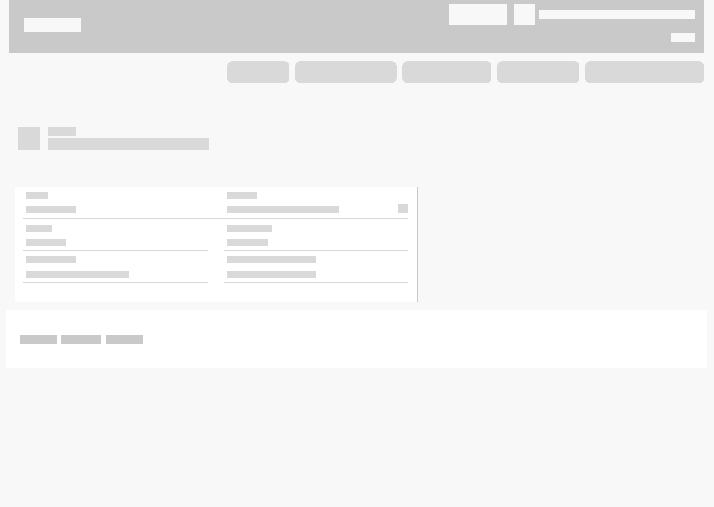
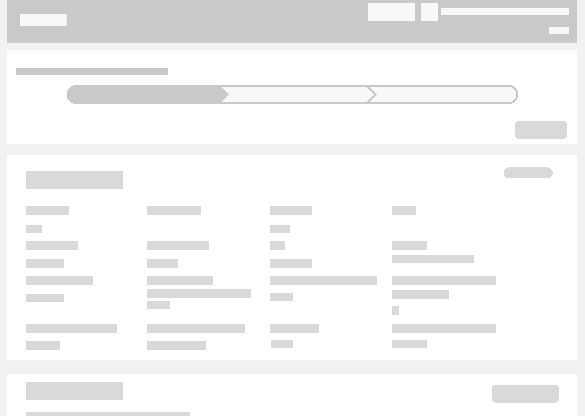
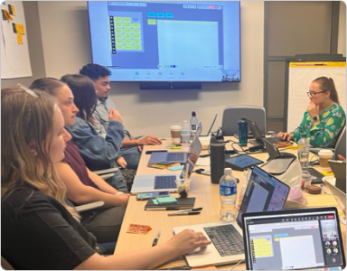
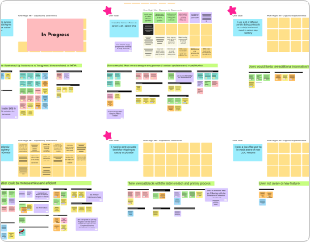
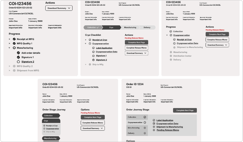
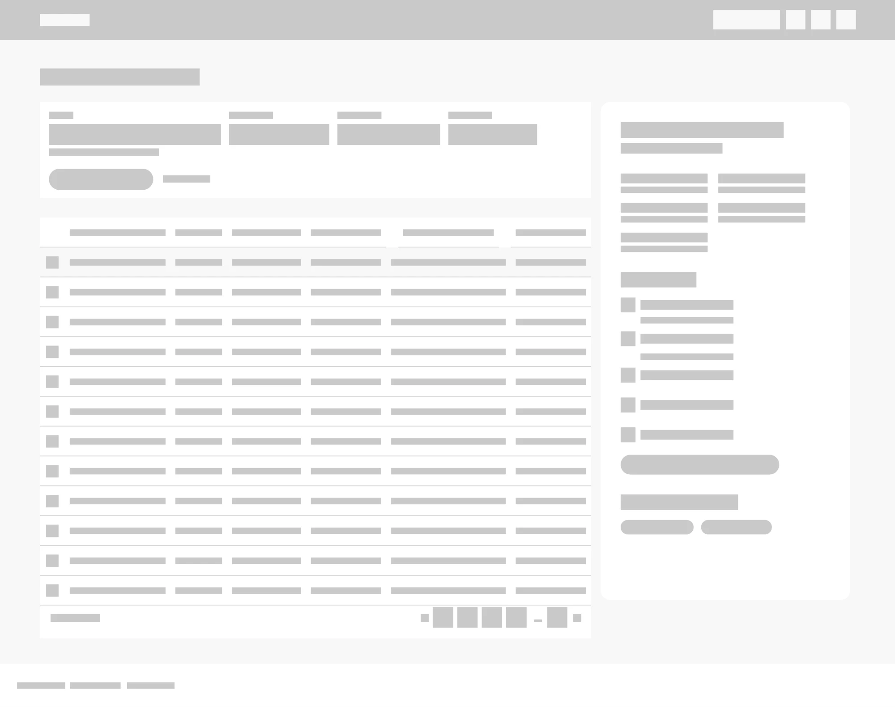

Project Reset Process Deck
Simplifying navigation in Johnson & Johnson's cell-therapy tracking portal, where a confusing screen isn't just friction. It's a compliance risk.
At A Glance
Problem
Tangled navigation cost users time and risked wrong-order errors.
What I Did
Led the end-to-end redesign, from global research to two shipped releases.
Impact
Hit the industry UX benchmark for the first time.
The Problem
The portal verifies every hand-off of a personalized cell therapy. After 10 site visits in the US and Germany and 11 user interviews with planners, warehouse and QA staff, two issues stood out.


The Process
I kicked off with a full-day hybrid workshop, then led the work from sketches to high-fidelity designs. Along the way I directed two designers and met with engineering weekly to keep effort proportional to each problem.



Two Key Decisions
Removing the intermediary page
Every workflow sat behind an extra page just to pick a task, and a wrong pick meant starting over. Users still needed its patient details, so I moved them into a side panel on the landing page and removed the page.
Making "home" findable globally
Clicking the logo to go home is a North American habit, so EMEA users got stranded. Breadcrumbs and global search were costly on Salesforce, so I added a simple home icon: recognized everywhere, with nothing to translate.
An extra page just to confirm the order. A wrong pick meant starting over.
The page is gone. Patient details now sit in a side panel on the landing page, so an order can be validated and switched in place.

What Users Said
"I finally understand how to move around the portal!"
A user from Europe after using the new navigation. She finally had navigation that aligned with her expectation of how to move through the portal.
The Outcome
Shipped across two releases in 2025. That year the portal reached the industry UX-Lite benchmark (78%) for the first time. Alongside the two decisions, I also shipped:
- Workflow checklist
- Order overview
- Reprint without modify
- Modification mode
- Resources & reports
- Consolidated shipment tracking
Midway, I also led the platform's rebrand to Johnson & Johnson's 2023 identity, from design to hand-coded production components.
Read The Rebrand Case Study